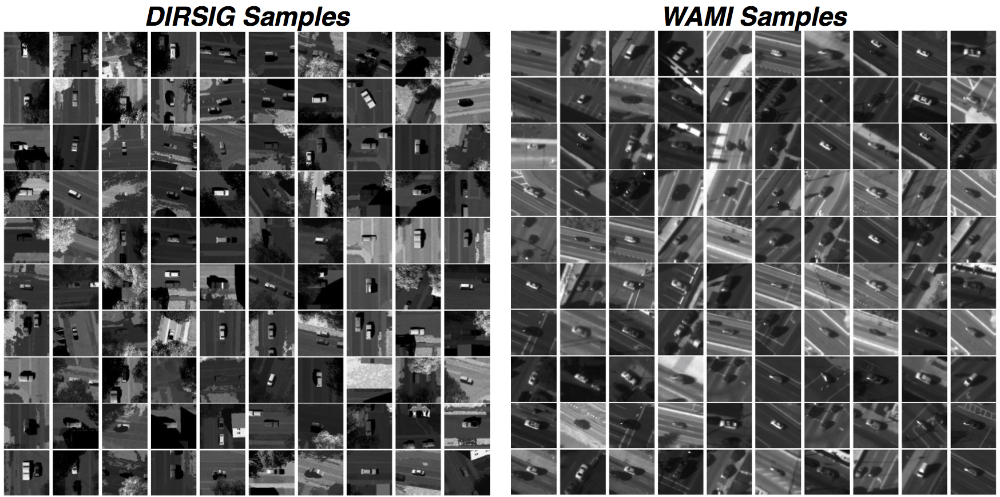
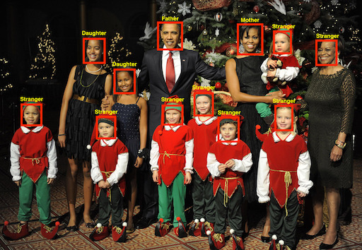
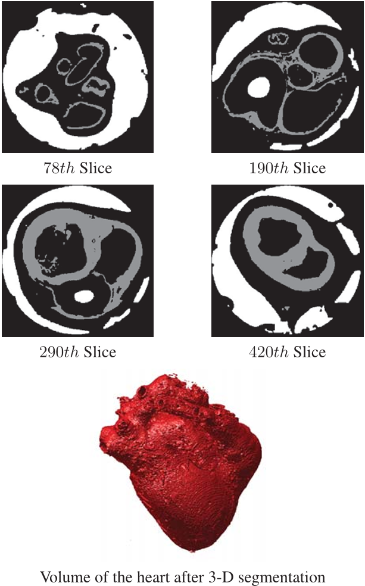
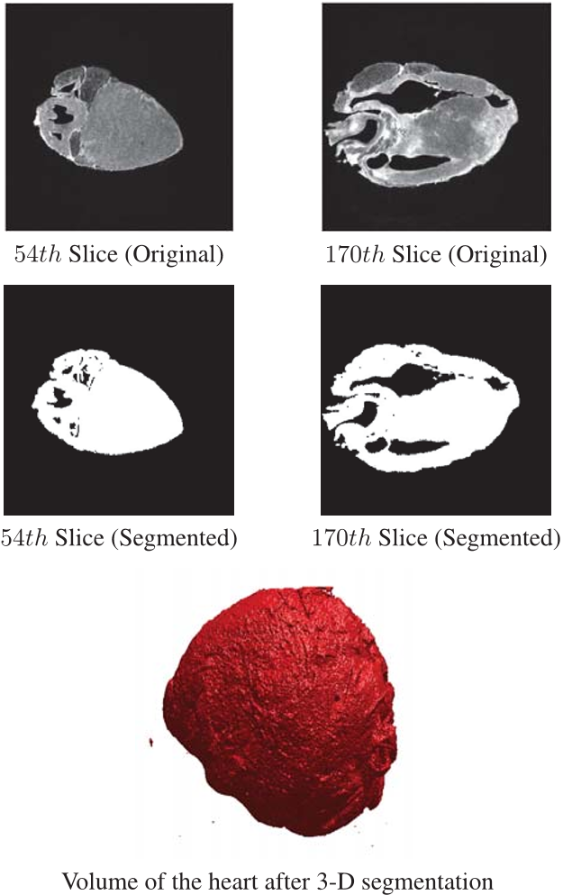

Burak Uzkent, Ph.D.
Computer Vision Engineer
Planet
E-mail : bxu2522 at rit dot
edu
u.burak at planet dot com
[ Background ] [ Education ] [ Work Experience ] [ Publications List ] [ News ] [ Datasets ] [ Links ]
[ Background ]
I am currently working for Planet as a Computer Vision Engineer. My work involves building tools to understand satellite images. In particular, I am performing work on building Deep Learning-driven object detection models using medium-to-low resolution images. Prior to joining Planet, I worked for Autel Robotics to help the computer vision team build autonomous flying capability on the next generation drones. To be more specific, I spent most of my time on developing and implementing a highly efficient visual single target tracking algorithm in the Computer Vision team led by Dr. Seo. Before to joining the Autel Robotics Computer Vision team, I pursued my Ph.D. (2011-2016) in the Chester F. Carlson Center for the Imaging Science at Rochester Institute of Technology under the advisory of Dr. Matthew. J. Hoffman. The focus of my Ph.D. thesis was to use a multi-modal optical sensor to detect and track vehicles from a moving and fixed aerial platforms. Also, for short term, I conducted research on 3-D MRI Cardiac Segmentation using Graph Cuts to understand the mechanism underlying the cardiac fibrillation. During my Ph.D., I worked for Huawei R&D (2015-2016) as a Computer Vision Algorithm Engineer Intern where I worked on extracting the semantics from a family photo album using Deep Learning driven face and contextual features. My supervisor at Huawei R&D was Dr. Dong-ging Zhang. Before my arrival to RIT, I earned my Masters Degree (2011) in the Electrical & Computer Engineering Department at University of Bridgeport. Under the advisory of Dr. Buket Barkana, I conducted research on non-speech environmental sound classification in the Signal Processing Research Group. This work included the delivery of a new feature set highlighting the range of pitch values of non-speech sounds. Finally, I pursued my Bachelors degree (2009) in the Electrical & Electronics Engineering Department at Eskisehir Osmangazi University under the advisory of Dr. Osman Parlaktuna. My overall research interests lie in the fields of real-time visual object tracking, object detection, image segmentation, and audio signal classification.[ Education ]
- Ph.D., Chester F. Carlson Center for Imaging Science, Rochester Institute of Technology, Rochester, USA, 2011 - 2016
- Dissertation
Topic : "Aerial
Object
Detection and Tracking using a Multi-modal Adaptive
Sensor"
- M.S., Electrical & Computer Engineering, University of Bridgeport, Connecticut, USA, 2009 - 2011
- Thesis
Topic : "Non-speech Enviromental Sound
Classification with a New Set of Features"
- B.S., Electrical & Electronics Engineering, Eskisehir Osmangazi University, Turkey, 2004 - 2009
- Thesis
Topic : "Autonomous Parallel Parking of
Non-holonomic Vehicles"
[ Work Experience ]
- Computer Vision Engineer, Planet, USA, 06/26/2017 - Present
-
Computer
Vision Engineer, Autel Robotics, USA, 08/22/2016 -
06/22/2017
-
Computer
Vision Algorithm Engineer Intern, Huawei Technologies,
USA, 11/22/2015 - 05/06/2016 - [ Internship Report ]
[ Publications List ]
[ Journals ]
1. B. Uzkent, M. J. Hoffman, A. Vodacek, “Integrating Hyperspectral Likelihoods in a Multi-dimensional Assignment Algorithm for Aerial Vehicle Tracking”, IEEE Journal of Selected Topics in Remote Sensing and Observation, 9(9): 4325–4333, May 2016. [ Link ]
2. B. Uzkent, M. J. Hoffman, A. Vodacek, Bin Chen, “Feature Matching with an Adaptive Optical Sensor in a Ground Target Tracking System”, IEEE Sensors Journal, 15(1): 510–519, January 2015. [ Link ]
3. B. Uzkent, B.D. Barkana, H. Cevikalp, “Non-speech environmental sound classification using SVMS with a new set of features”, International Journal of Innovative Computing, Information and Control, 8(5): 3511–3524, May 2012. [ Link ]
4. B.D. Barkana, B. Uzkent, I. Saricicek, “Normal and abnormal non-speech audio event detection using MFCC and PR-based feature sets”, Advanced Materials Research, Volume 601, pp: 200–208, December 2012. [ Link ]
5. B.D. Barkana, B. Uzkent, I. Saricicek, “Environmental noise classifier using a new set of feature parameters based on pitch range”, Applied Acoustics, 72(11): 841–848, November 2011. [ Link ]
6. B. Uzkent, B.D. Barkana, J. Yang, “Automatic environmental noise source classification model using fuzzy logic”, Expert Systems with Applications, 38(7): 8751–8755, July 2011. [ Link ]
[ Conferences ]
2. B. Uzkent, M. J. Hoffman, A. Vodacek, “Real-time Target Detection and Tracking in Aerial Video using Hyperspectral Features,” In Proceedings of the 1st IEEE Workshop on Moving Cameras Meet Video Surveillance: From Body Cameras to Drones, In conjunction with Computer Vision and Pattern Recognition 2016, pp. 36–44. June 2016. [ Link ] [ Code ]
3. B. Uzkent, M. J. Hoffman, A. Vodacek, “Spectral Validation of Measurements in a Vehicle Tracking DDDAS”, In Proceedings of International Conference on Computational Science, Volume 51, pp. 2493–2502, June 2015. [ Link ]
4. B. Uzkent, M. J. Hoffman, A. Vodacek, “Background Image Understanding and Adaptive Imaging for Vehicle Tracking”, In Proceedings of the SPIE 9460, Airborne Intelligence, Surveillance, Reconnaissance (ISR) Systems and Applications XII, pp. -94600F–94600F-7, April 2015. [ Link ]
5. B. Uzkent, M. J. Hoffman, A. Vodacek, “Efficient Integration of Spectral Features for Vehicle Tracking utilizing an Adaptive Sensor”, In Proceedings of the SPIE 9407, Video Surveillance and Transportation Imaging Applications, pp. 940707–940707-10, February 2015. [ Link ]
6. B. Uzkent, M. J. Hoffman, E. Cherry, N. Cahill, “3-D MRI Cardiac Segmentation using Graph Cuts”, In Proceedings of the IEEE Western NY Image Processing Workshop, pp. 47–51, Rochester, NY, November 2014. [ Link ] [ Code ]
7. B. Uzkent, M. J. Hoffman, A. Vodacek, J. P. Kerekes, B. Chen, “Feature matching and adaptive prediction models in an object tracking DDDA
S”, In Procedia Computer Science, Volume 18, pp. 1939-1948, 2013. [ Link ]
8. B. Uzkent, B.D. Barkana, “Pitch range-based feature extraction for audio surveillance systems”, In Proceedings of IEEE International Conference on Information Technology: New Generations (ITNG), pp. 476–480, April 11-13, 2011. [ Link ]
9. B. Uzkent, B.D. Barkana, “Pitch range-based environmental noise classifier”, In Proceedings of American Society for Engineering Education Northeast Section:, May, 2010. (Poster) [ Link ]
10. B.D. Barkana, I. Saricicek, B. Uzkent, “Performances of the ANN, SVM, and K- means clustering methods recognizing different environmental sounds”, In Proceedings of the 24th European Conference on Operational Research, Lisbon, Portugal, July 11- 14, 2010. [ Link ]
11. B. Uzkent, O. Parlaktuna, “Autonomous parallel parking of non-holonomic vehicles”, In Proceedings of the 13th National Conference in Middle East Technical University, Ankara, Turkey, 2009. [ Link ]
[ Under Review ]
1. B. Uzkent, Y. Seo, “EnKCF : Ensemble of Kernelized Correlation Filters for Object Tracking in High Speed’, In Proceedings of the Winter Applications of Computer Vision 2018. [ Abstract ]
[ Under Review ]
1. B. Uzkent, A. Rangnekar, M.J. Hoffman, "DeepHKCF : Deep Hyperspectral Kernelized Correlation Filter Tracker for Aerial Hyperspectral Videos", IEEE Transactions on Geoscience and Remote Sensing.
[ News ]
- I am currently working on potential
applications of Kernelized Correlation Filters to
hyperspectral aerial videos for object tracking.
Additionally, I work on vehicle detection in the
Wide-Area-Motion-Imagery (WAMI) platform by training a
Deep Convolutional Neural Network with a synthetic
dataset generated by DIRSIG software. Some of the
positive samples in synthetic dataset can be seen in the
figure below. The trained Deep Learning model can
classify the WAMI samples with %91 accuracy.

- We submitted our paper on high speed
object tracking to the Winter Application of
Computer Vision Conference 2018. Some
experiments on the UAV123 dataset is attached below. The
experiments are carried out on an I5, 2.7 GHz processor
in C++ platform on a Ubuntu OS. We propose a scale
adaptive-tracker that can run on average at 416 fps on
the UAV123 dataset.
- Uzkent, Burak. "EnKCF : Ensemble of Kernelized Correlation Filters for Object Tracking in High Speed". [ Abstract.pdf ]
- Our paper is accepted to the Perception
Beyond the Visible Spectrum Workshop in conjunction
with the Computer Vision and Pattern Recognition
Conference 2017. [ Paper
]
- Uzkent, Burak, Aneesh Rangnekar, Matthew J. Hoffman, and Anthony Vodacek. "Aerial Vehicle Tracking by Adaptive Fusion of Hyperspectral Likelihoods Maps".
- Our
Hyperspectral Aerial Video Set for vehicle tracking is
uploaded now. Please cite the paper below if you
use this dataset for your research. Ground truth files
for the vehicles in this video and a readme file can be
downloaded from this link.
Below, you can also find the grayscale version of the
hyperspectral aerial video. Grayscale images are
generated by summing the individual channels in visible
wavelength range. Please do not hesitate to contact me
for questions. You can find the MATLAB code with C-based
detection module in this link.
- Uzkent, Burak, Matthew J. Hoffman, and Anthony Vodacek. "Real-Time Vehicle Tracking in Aerial Video Using Hyperspectral Features." In Proceedings of the IEEE Conference on Computer Vision and Pattern Recognition Workshops, pp. 36-44. 2016.
- I successfully defended my Ph.D. thesis
on "Aerial Vehicle Tracking using a Multi-modal Optical
Sensor" as of May 16, 2016. I would like to thank my thesis
committee and my advisor Dr. Hoffman and co-adviser Dr.
Vodacek for their supervision throughout my Ph.D. You can
find my presentation here.
- I finished my internship at Huawei
R&D where I worked on representing people with face-only
and contextual features to classify individuals in a family
photo album as strangers and family members. The second part
of my work included desinging an album-specific classifier
to assign sematic roles to family members. You can find an
experiment on a family picture with strangers below. To
learn contextual features, the ZFNet (Improved AlexNet) is
fine-tuned on the People in Photo Album Dataset on three
different areas including context. You can find the Caffe
fine-tuning files in this link.
For the face-only area, the pre-trained FaceNet model is
used.

- Our journal paper titled "Integrating Hyperspectral Likelihoods in a Multi-dimensional Assignment Algorithm for Aerial Vehicle Tracking" has been accepted by the IEEE Journal of Selected Topics in Remote Sensing and Observation. Below, you can find an example of single target tracking from a fixed aerial platform.
- For short term (2014 Summer), I worked on
3-D Cardiac segmentation using MRI slices. I presented our
paper in the IEEE Western New York Image Processing
Workshop. Below, you can find some results on canine (left)
and sheep (right) heart segmentation. C++ implementation can
be found in this link.
- Uzkent, Burak, Matthew J. Hoffman, Elizabeth Cherry, and Nathan Cahill. "3-D MRI cardiac segmentation using graph cuts." In Image and Signal Processing Workshop (WNYISPW), 2014 IEEE Western New York, pp. 47-51. IEEE, 2014.
 
[ Datasets ]
-
We released our dataset, Synthetic Aerial Vehicle Classification Dataset, to the research community. Our dataset consists of 55227 samples of 48x48 px images from an aerial platform generated by the Digital Imaging and Remote Sensing Software (DIRSIG). It has two classes : (1) vehicle, and (2) background. Overall, there are 27613 samples of vehicle images and 27614 samples of background images. The Ground Sampling Distance in this dataset are tuned to 0.3m on average as we target vehicle detection/classification in the Wide Area Motion Imagery (WAMI) platform. You can find some positive samples from DIRSIG generated dataset and WAMI dataset in the figure below. Our goal by releasing this dataset is to avoid splitting a single video captured from the WAMI platform to form a training and validation dataset as it results in overfitting. Please cite our paper if you use this dataset for research purposes.
- We released our dataset, a synthetic
aerial hyperspectral video for vehicle tracking, to the
aerial tracking research community. This video contains 157
frames captured from an aerial platform generated by the Digital Imaging and Remote
Sensing Software (DIRSIG). The average ground
sampling distance in the video is 0.3m and the frame
rate is set to be 1.42 fps. You can find the full video
below. Our dataset also comes with the ground truth
locations of the vehicles in the video. Please cite
our paper if you this dataset for research purposes. For
more information, we refer the readers to our paper shown
below and our previous papers you can find in publications
section.
@inproceedings{uzkent2016real,
title={Real-time vehicle tracking in aerial video using hyperspectral features},
author={Uzkent, Burak and Hoffman, Matthew J and Vodacek, Anthony},
booktitle={Proceedings of the IEEE Conference on Computer Vision and Pattern Recognition Workshops},
pages={36--44},
year={2016}
}
[ Links ]
[ Google
Scholar ]
[ Curriculum Vitae ]
You can find some of my codes
and other studies in my Github profile.
[ GitHub ]
I am a big Computer
Vision/Machine Learning fan. I spend some of my free time on
Deep Learning. In my other free time, I try to stay active by
playing football, basketball and running. I am a big fan of
Galatasaray Football Team and my favorite football player is
Gheorge Hagi, the Galatasaray Legend.
I have a twin sister and
identical twin nephews, Aras and Ruzgar. You can see their
picture here.
{kind=link}